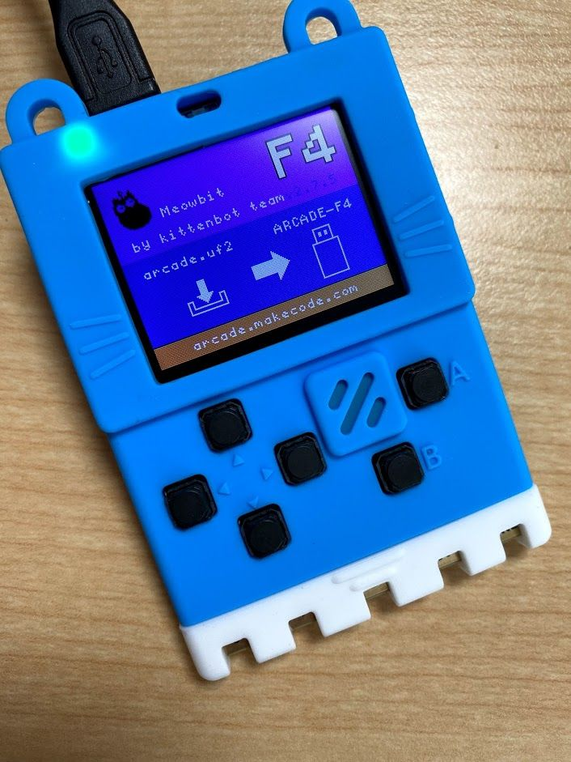
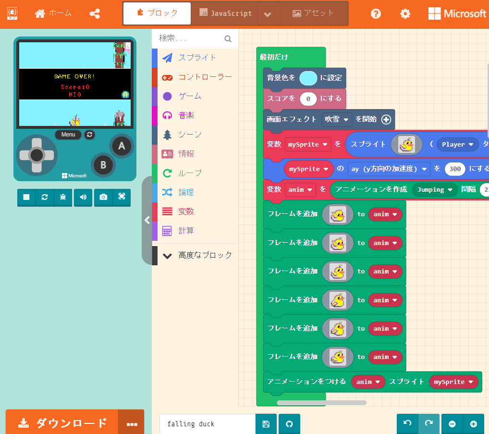
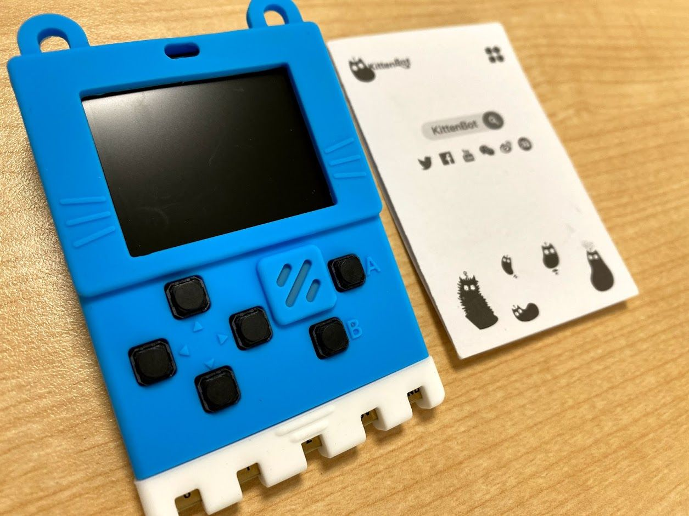
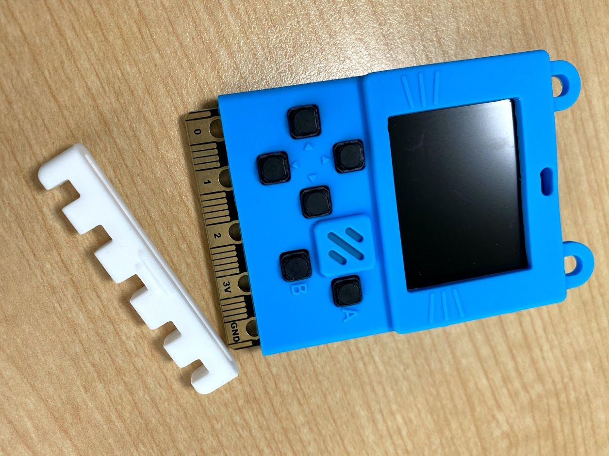
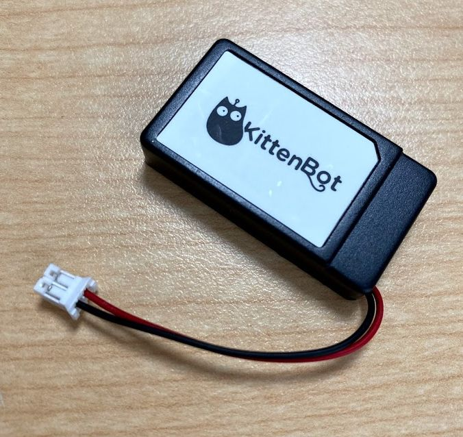
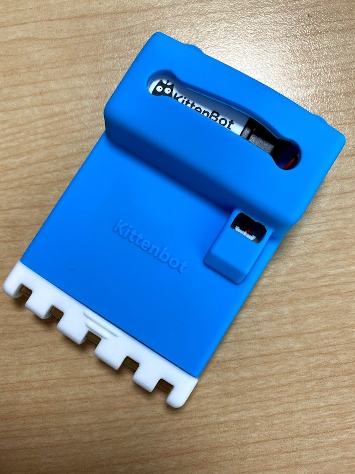
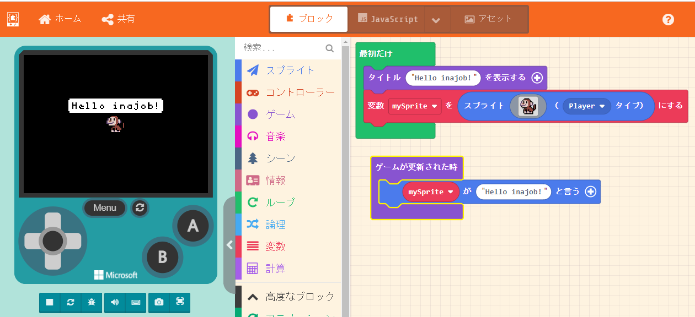
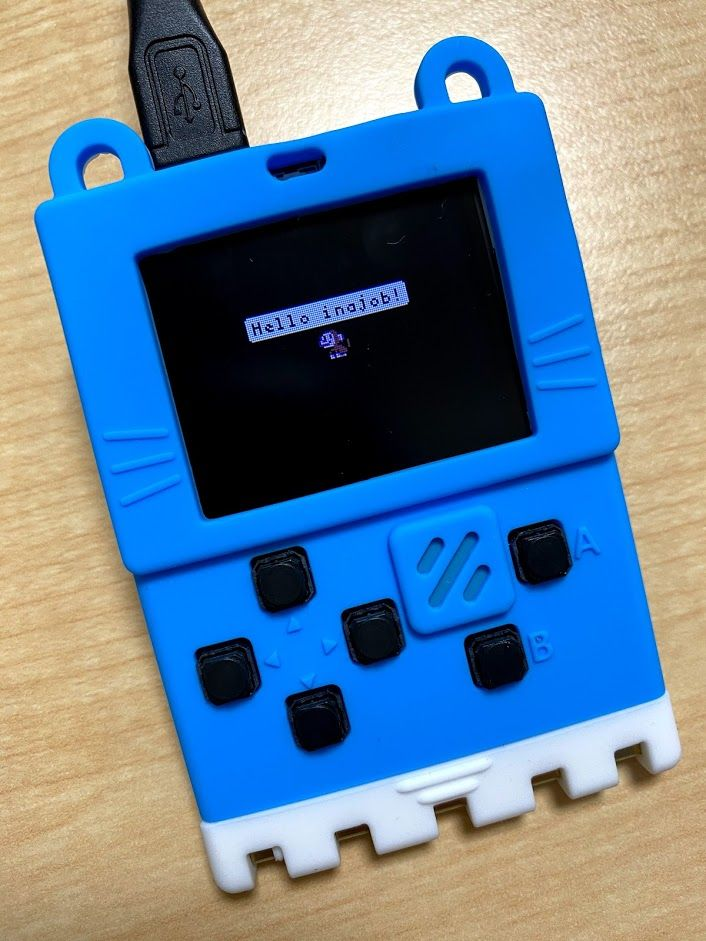
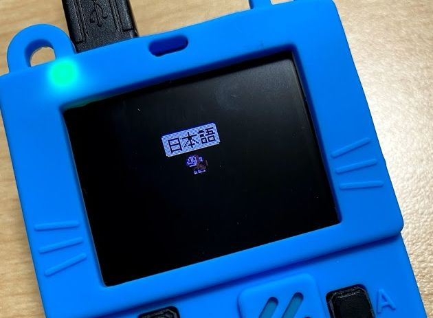
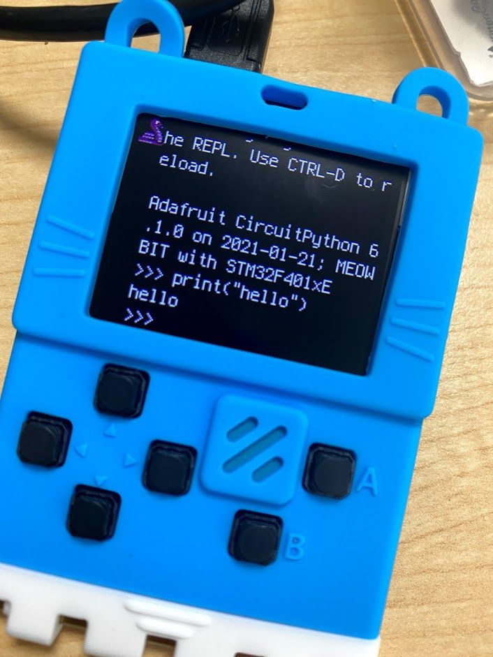

この記事はBanggoodの提供でお届けします。
以前紹介したようにこのブログはBanggoodと提携させていただいており、今回紹介するMeowbitはBanggoodからいただいたものとなります。 （Meowbitのレビューがしたい！と言ったのは自分なので、Banggoodが無理やり画面付き顕微鏡を押しているわけではなく、inajobの一押しアイテム！、という感じです。）
・・・ といういつもの前置きはそこそこに、Meowbitについて紹介していきます。
そして、今回もこのブログのために2021/03/31まで利用できるクーポンを頂くことが出来たので、そちらも紹介します。
Meowbitとは
MeowbitはMicrosoft Makecode Acradeに対応した携帯ゲーム機の1つです。 かわいらしいネコ型の筐体なのも特徴です。

Makecode Arcadeとは
MakecodeはMicrosoftが提供しているブラウザ上で動作する、プログラミング学習用のサービスです。
Blockyを使ったビジュアルプログラミングで、子供でも簡単にプログラミングを学ぶことが出来るというコンセプトのサービスです。
その中でもMakecode Arcade というのは独立したサービスとなっており、レトロ風ゲームを作る専用のプラットフォームとなっています。

数多のプログラミング学習プラットフォームとの違いは、「実際のゲーム機をサポートしている」という事です。
対応しているゲーム機があれば、Makecode Arcadeのゲームをダウンロードして遊ぶことが出来るのです。
ゲーム機にダウンロードしなくてもブラウザ上でも遊ぶことが出来ます。
（ゲームによってはブラウザではうまく動作しますが、実機だとスペック不足で動かないものもあるようです）
さらに、Makecode Arcade用のデバイスの設計公開されており、自分でMakecode Arcadeに対応したゲーム機を自作することが出来ます。
（個人的には、この自分でゲーム機をDIYできるというのは、個人的にはかなり一押しポイントです。）
外観

写真からはちょっとわかりにくいですが、一般的なゲーム機とは違いこのMeowbitのケースは柔らかいシリコンケースです。
下の白い部分はセパレート式になっており、ここだけ外すことが出来ます。Microbitに対応した周辺機器につなげる際はここを外すのがよさそうです。

操作用のボタンは、上下左右のボタンに加え、A,B。それ以外に側面のシリコンケースの中に2つのスイッチがあります。これはゲームで遊ぶためのものではなく、USB書き込みモードにするためのボタンと、共通メニューを出すためのボタンです。
上下左右のボタンが異常に離れているのが、コンシューマーゲーム機に慣れた自分としては違和感がありますが、こういうのに初めて触る子どもとかは、このくらいボタンにマージンがあるほうが操作しやすいのかな？
スペック
さてMeowbitのスペックを見ていきましょう。
- CPU: STM32F401RET6
- バッテリー（オプション）
- 1.8インチディスプレイ、解像度は160x128
- Mico:bit互換の端子
- ブザー
- 十字キー、A,Bキー
- 書き込み用のUSBポート
- SDカードスロット
- 輝度センサー
- 気温センサー
- ジャイロスコープ
- 2MByteのSPIフラッシュ（Unicodeのキャラクタテーブルを入れておくもののようです。）
ざっとこんな感じです。
STM32F401RET6は、84MHzのCortexM4、Flashは512KBでRAMは96KBといった性能のICです。
バッテリー
MeowbitだけではUSB接続を抜いてしまうと電源が切れてしまいますが、公式が提供しているバッテリーがあればUSB接続なしでもゲームで遊び続けることが出来ます。

今回はこのバッテリーも購入し、Meowbitに取り付けました。 取り付けるとこんな感じです。

ゲームのダウンロード
Microsoft Makecode ArcadeのWebページから面白そうなゲームを選んで、uf2ファイルをダウンロードし、それをMeowbitを接続したときにあらわれるUSBドライブに移動します。
するとMeowbitにゲームが書き込まれて、しばらくするとMeowbitでゲームをプレイすることが出来ます。
公式Webページに加えて、フォーラムでもゲームが投稿されています。
（ゲームの種類は多いのですが「習作」的なものが多く、面白いゲームを探す方法があれば知りたいです・・）
Makecode Arcadeでゲームを自作する
折角なので、自分でもゲームを作ってみましょう。

ビジュアルプログラミングなので、ちょっと操作するだけで、簡単にこんな画面が作れます。
書き込み用のファイルをダウンロードしてPCからMeowbitのドライブにコピーすれば、書き込み完了です。
実機でこのゲームが動きます。簡単です！

日本語表示も普通に出来ました。

ブロックではなくJavaScriptやPythonでもプログラムを書くことが出来ます。 FAQ によると、この「JavaScript」というのはTypeScriptのサブセットである「Static TyoeScript」と呼ばれる独自の言語のようです。
言語仕様を見てみると、この言語は静的にコンパイルされてゲーム機用のバイナリになるようで、通常のJavaScriptのような動的言語の何倍も高速で省メモリな動作を実現しているようです。
単なるゲーム実行プラットフォームという事以外にも、こういった言語仕様やランタイムの設計までこだわっているのはさすがMicrosoftだなと感じます。
CircuitPythonでインタラクティブプログラミング
次はCircuitPythonをインストールしてみます。
これをインストールして、PCからシリアルコンソールで接続すると、PCから入力した文字をMewbit上のPythonインタプリタで実行することが出来ます。
Windowsであれば、TeraTermなどでシリアル接続することで、PythonのREPLに接続できます。

このあたりを参考にプログラムをシリアルコンソール経由で入力すると、画面を直接操作することも出来ます。
またCircuitPythonを書き込んだのちにPC側にあらわれるCIRCUITPYというドライブにcode.pyというファイルを作成することによってもプログラムを実行することが出来ます。
じっくりとコーディングしたい方にはこちらがおすすめです。
その他の環境
Meowbitの公式ページを見ると、ほかにもkittenblockというビジュアルプログラミング環境や、Mu Editorを使ったMicroPythonの環境もあるようです。
まぁこれらはMakecode Arcadeや CircuitPythonの環境とよく似ているようなので、今回は試しませんでした。
感想
Makecode Arcadeに興味があるなら「即買い！」の商品だと思いました。
Makecode Arcadeに対応しているハードウェアはいくつかありますが、その中でも、Meowbitは結構完成度が高い方です。
加えてCircuitPythonや、Microbit互換端子を活用できるというのもお得ポイントです。1枚で3度おいしい という感じのゲーム機です。
自分でこの手のゲーム機を作ってみたいと考えている人にとっても、良い参考資料になるでしょう。
一方Makecode Arcadeにはあまり面白いゲームがなさそうで、この手のデバイスで面白いゲームで遊びたいならArduboyのほうが良いかもしれません。 （逆に面白いゲームを作れれば一躍有名になれるかも！！）
またMeowbitの十字キーは、一般的なコンシューマゲーム機のものとは違い、ボタンが大きく離れているため、ゲームによっては操作しづらいです。
このあたりに目をつぶることが出来るなら、このスペックでこの値段はかなりお買い得だと思いました。
クーポンコード！
さて、ここまで紹介してきた Meowbitですが、今回Banggoodの提供という事で、20%OFFの割引のクーポンを頂いています。
コード： BGJPkm2559
Meowbitをカートに入れ、チェックアウト後にこのクーポンコードを入力することで割引を受けることが出来ます。
有効期限は2021/03/31なので、買いたい方はお早めにどうぞ！（加えて、在庫に限りがあると思うのでお早目に！）

関連記事